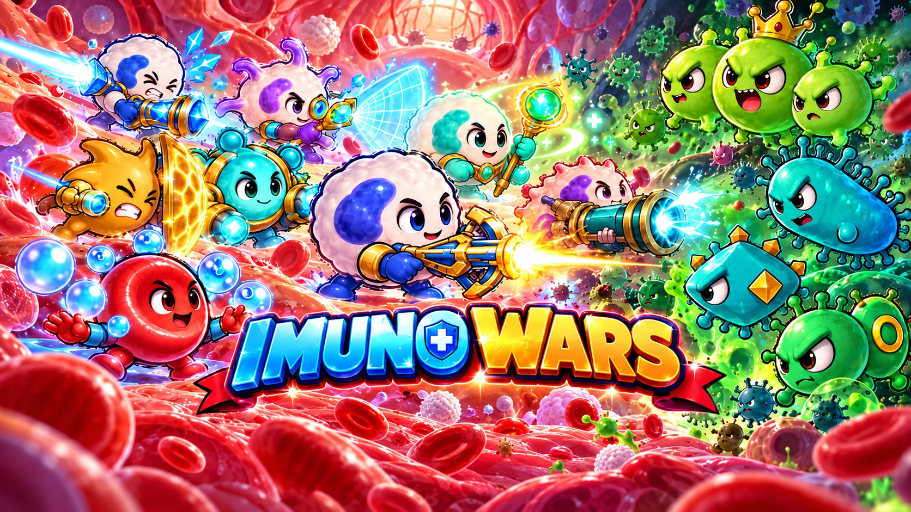
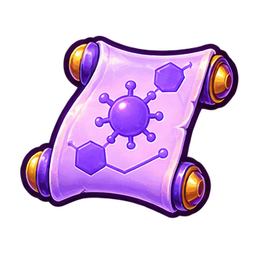

Pilih Misi
Selesaikan level secara berurutan untuk membuka mekanik baru.
PETA PERTAHANAN
Misi berikutnya
LABORATORIUM
Upgrade Pasukan
Perkuat pasukan hingga Lv5. Berlaku pada penempatan berikutnya.

0 RisetARSIP BIOLOGI

Selesaikan level secara berurutan untuk membuka mekanik baru.
PETA PERTAHANAN
LABORATORIUM
Perkuat pasukan hingga Lv5. Berlaku pada penempatan berikutnya.

0 RisetARSIP BIOLOGI